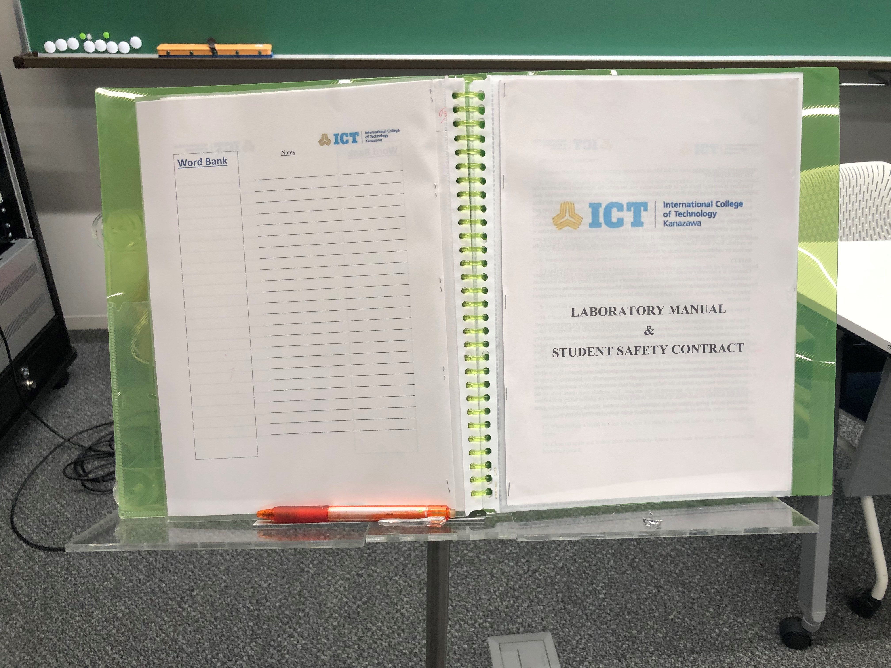

ED(Engineering Design) is one of the class in ICT. This is a class mainly about engineering. There are projects, making prototypes using machines such as 3D printer and laser cutter. There are other machines like leathe, milling, and drill press.
EDIA is the first ED class in ICT. The aim of the project in this class is to make one prototype that solves daily problems that each student have in school life.
Example of prototype: A stand that holds binder and notes
On the final class, there will be a poster presentation. It when you show how the prototype sovles the problem and how it works. Tell the teahcers what you have done for the project using the poster.